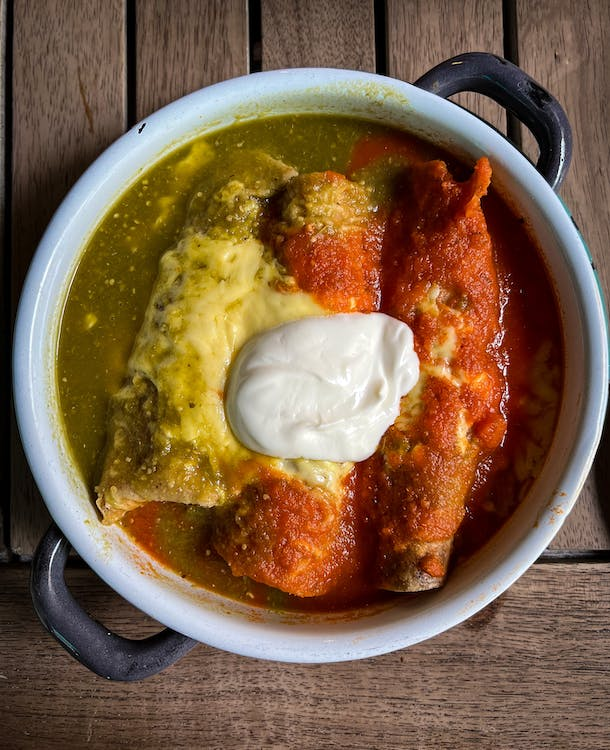

Credits to Budget Bytes for this recipe
Description
Green Chile Chicken Enchiladas is the perfect mid-week meal that is easy to prep, freeze, and reheat.
Everything can be found at a supermarket or your local grocery market.
This dish highlights canned green chiles but fresh would be even better.
Ingredients
Enchiladas
- 12 6-inch corn tortillas
- 1/2 Tbsp cooking oil
- 1/2 cup sour cream
- 8 oz. pepper jack cheese, shredded and divided
- 2 green onions, sliced
- 1/2 tsp garlic powder
- 1/4 tsp cayenne pepper
- 1/2 tsp salt
Green Chile Enchilada Sauce
- 2 4 oz. cans diced green chiles
- 2 Tbsp cooking oil
- 2 Tbsp all-purpose flour
- 1 tsp ground cumin
- 1/2 tsp garlic powder
- 1/4 tsp onion powder
- 1 cup water
- 1/4 tsp salt
Steps
-
Heat a large skillet over medium-high. Once hot, toast the tortillas for 30-60 seconds on each side, or until
browned on the edges (no oil needed).
Stack the toasted tortillas on a plate and cover with foil or an upside down bowl to keep them from drying out.
-
Turn the heat under the skillet down to medium, add the cooking oil, and swirl to coat the surface.
Add the chicken breast and cook for about 5-7 minutes on each side, or until cooked through (165ºF internal temperature).
Transfer the chicken breast to a clean cutting board to cool.
-
While the chicken is cooking, begin the green chile enchilada sauce.
Add both cans of diced green chiles (with liquid) to a blender and purée until smooth.
-
Add the cooking oil, flour, cumin, garlic powder, and onion powder to a small sauce pot.
Stir and cook over medium, allowing the mixture to come up to a bubble.
Once bubbling, continue to cook and stir for 1 minute.
- Carefully add the water and puréed green chiles to the sauce pot and whisk to combine.
Allow the sauce to come back up to a simmer, stirring often.
Once simmering, turn off the heat, and season with salt (about ½ tsp).
Set the sauce aside.
-
Begin preheating the oven to 350ºF.
Add the sour cream, half of the shredded pepper jack, sliced green onions, garlic powder, cumin, cayenne and salt to a large bowl.
Finely dice the chicken, then add it to the bowl with the other ingredients.
Stir until everything is well combined.
-
Begin assembling the enchiladas.
Add about ¼ cup of the prepared filling to the center of each tortilla and then roll it closed.
Place the filled tortillas in a casserole dish, seam side down.
-
Pour the prepared green chile enchilada sauce over the enchiladas, then top with the remaining shredded pepper jack cheese.
Bake in the preheated oven for 30 minutes, or until the sauce is bubbling around the edges.
Serve hot.
Return to top
Home